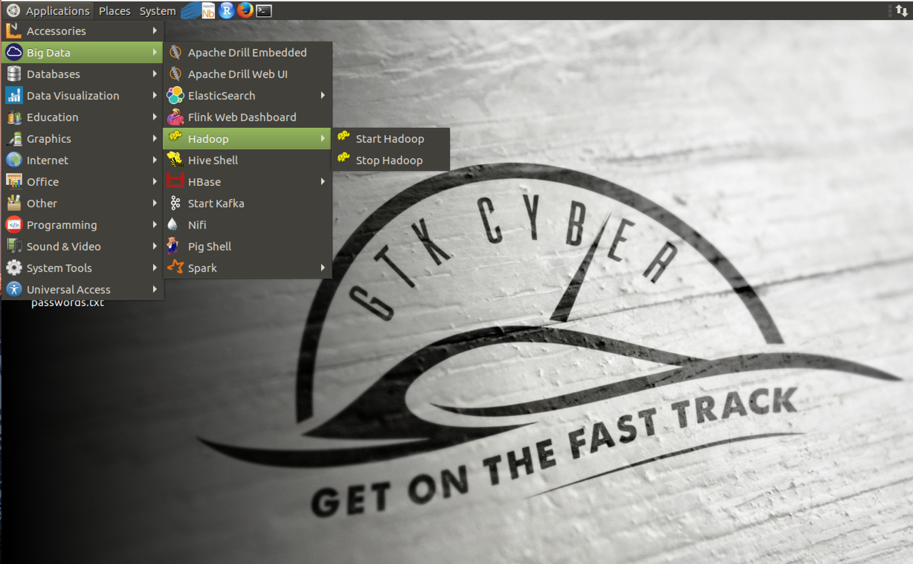
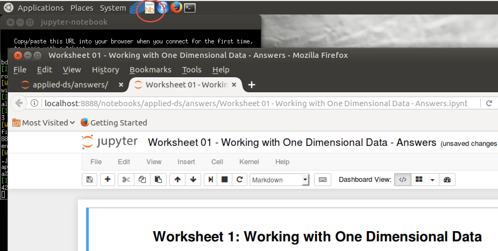
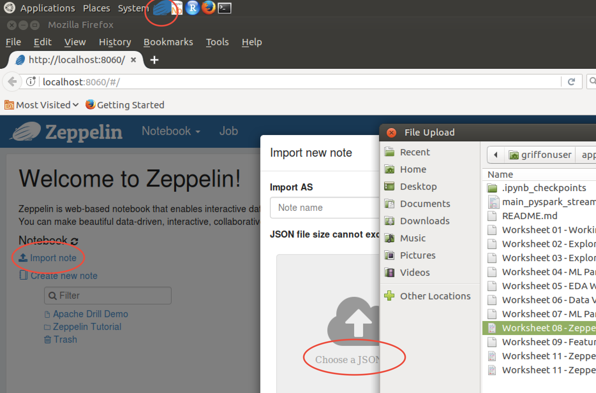
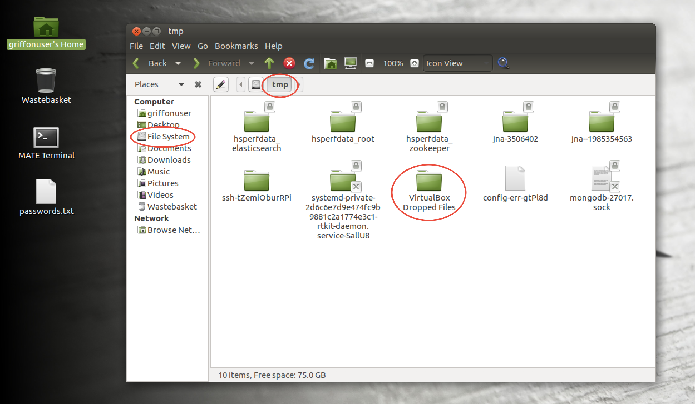

Applied Data Science for Security Professionals
BlackHat 2018 Trainings (July 22-25, 2018) presented by GTK Cyber

GTK Cyber www.gtkcyber.com was founded to bridge the gap between Data Science and Cyber Security and not only provide high standard hands-on trainings, but introduce students to the most cutting-edge technologies and advancements in artificial intelligence, all with a focus on direct applicability to cyber security.
Beer and Cyber CTF
We are pleased to announce that our official Capture the Flag challenge www.beerandcyber.com is online. Sign up now for our Beer and Cyber CTF which accompanies our course content https://github.com/gtkcyber/beerandcyber-ctf.
GRIFFON Data Science Virtual Machine
In order to have the best student experience, we strongly encourage you to download the Griffon VM here: https://github.com/gtkcyber/griffon-vm. Griffon is a environment for data science. Griffon is based on Ubuntu MATE and includes numerous data science tools, all installed and configured for immediate use.

Instructors
- Charles Givre, CISSP - Data Scientist
- Austin Taylor, CISSP - Cyber Security Researcher
BlackHat 2018 Lectures:
- Introduction
- Overview of Regular Expressions
- Exploratory Data Analysis in 1 Dimension
- Exploratory Data Analysis in 2 Dimensions
- Hunting with Data Science
- Data Visualization
- Machine Learning (Feature Engineering)
- Machine Learning (Supervised)
- Machine Learning (Unsupervised)
- PySpark + ELK + Kafka
- Apache Drill
- Hacking Machine Learning Models
BlackHat 2018 Programming:
GitHub Structure
- answers (answers notebooks/solutions to all exercises and more)
- data (all data files)
- img (logo and screenshots)
- notebooks (all exercises)
- slides (all slides as pdf)
Development Environment
Starting Jupyter notebook: Go to Applications > Programming > Jupyter Notebook or hit the Nb icon located at the top menu bar. Navigate through your file system and open files with .ipynb extension.

Starting Zeppelin notebook: Go to Applications > Programming > Zeppelin > Start Zeppelin > open Mozilla web browser > http://localhost:8060/#/ or hit the Zeppelin icon (takes a while to start up) > import JSON to view notebook.

Copy files into VM: Drag and drop files or folders. You will find them under Filesystem > tmp > VirtualBox Dropped Files > subfolders ...

All exercises either as jupyter notebooks (.ipynb) or Zeppelin notebook (.json) are listed below.
Solutions to all challenges are within the answers folder (also contains additional notebooks and resources).
Notebooks/Scripts/Exercises and Data
- notebooks/
- Worksheet 01 - Working with One Dimensional Data .ipynb
- Worksheet 02 - Exploring One Dimensional Data.ipynb
- Worksheet 03 - Exploring Two Dimensional Data.ipynb
- Worksheet 04 - ML Part1 Feature Engineering Malicious URL ML.ipynb
- Worksheet 05 - EDA Worksheet.ipynb
- Worksheet 06 - Data Visualization Worksheet.ipynb
- Worksheet 07 - ML Part2 Malicious URL ML Classification.ipynb
- Worksheet 10 - Hunting with Data Science.ipynb
- Worksheet 12 - Working with Drill.ipynb
answers/
- Worksheet 01 - Working with One Dimensional Data - Answers.ipynb
- Worksheet 02 - Exploring One Dimensional Data - Answers.ipynb
- Worksheet 03 - Exploring Two Dimensional Data - Answers.ipynb
- Worksheet 04 - ML Part1 Feature Engineering Malicious URL ML - Answers.ipynb
- Worksheet 05 - EDA Worksheet - Answers.ipynb
- Worksheet 06 - Data Visualization Worksheet - Answers.ipynb
- Worksheet 07 - ML Part2 Malicious URL ML Classification - Answers.ipynb]
- Worksheet 08 - Zeppelin - PySpark Malicios URL ML Classification - Answers.json
(open Zeppelin notebook and import JSON to view) - Worksheet 09 - Featureless Deep Learning URL - Answers.ipynb
- Worksheet 10 - Hunting with Data Science - Answers.ipynb
- Worksheet 11 - Zeppelin Part1 - PySpark + ELK + Kafka - Answers.json
(open Zeppelin notebook and import JSON to view) - Worksheet 11 - Zeppelin Part2 - PySpark + ELK + Kafka - Answers.json
(open Zeppelin notebook and import JSON to view) - main_pyspark_streaming_apachelogs_kafka.py (complementing Worksheet 11 - Zeppelin Part2)
recommended readings
data/
- access
- apache-access.log
- CountVectorizer_domains.pickle (pickled ML Feature Engineering models)
- CountVectorizer_paths.pickle
- CountVectorizer_tlds.pickle
- dailybots.csv
- data1.json
- data2.json
- data3.json
- data4.json
- deeplearning_1DConv.h5 (saved Deep Learning URL Classification keras models)
- deeplearning_1DConv.json
- deeplearning_1DConvLSTM.h5
- deeplearning_1DConvLSTM.json
- deeplearning_LSTM.h5
- deeplearning_LSTM.json
- dga_data_full.csv (extra Domain Generation Algorithms data set)
- dga_data_small.csv
- dns_messages.log
- domains_created_db.csv (database of whois creation time for unique domains)
- eve.json (nested json file)
- eve_small.json
- feature_names.pickle (pickled ML Feature Engineering column names)
- hackers-access.httpd
- http.pcap
- http-pcap.json
- large_eve_json.zip
- maccdc2012_00000.csv.gz (pcap for pyspark)
- maccdc2012_00000.pcap.gz
- maccdc2012_00000_small.csv.gz
- maccdc2012_00000_small.csv
- maccdc2012_00000_small.pcap.gz
- mysql.log
- snort
- telnet-cooked.pcap
- url_data_full.csv (raw Machine Learning URL Classification data set)
- url_data_medium.csv
- url_data_mega_deep_learning.csv (more raw URLs for Deep Learning without whois info)
- url_data_small.csv
- url_features_final_df.csv (clean feature matrix Machine Learning URL Classification)
- url_features_final_df_spark.csv (for Spark version no periods in column names)